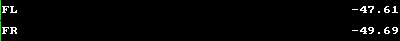
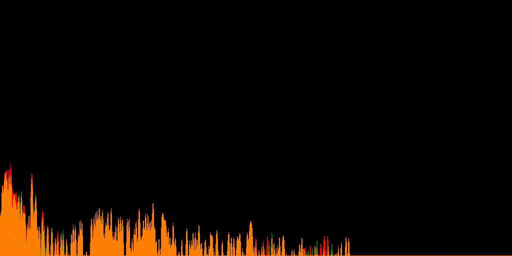
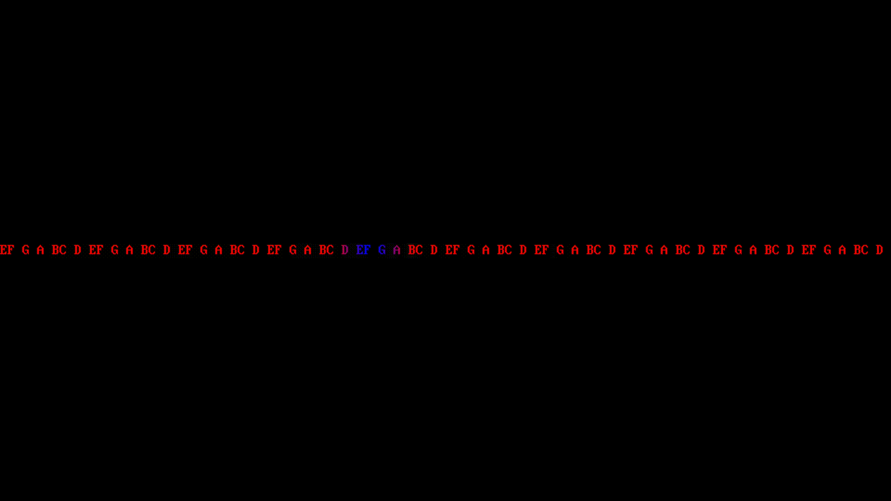

ffmpeg による音声・動画の変換
Tech
はじめに
ffmpeg は Unix 系 OS 上で動く，動画と音声の変換をしてくれる万能ツールである．MacOS の多くのアプリは裏で ffmpeg を使っている．この記事にあるコードをコピー＆ペーストすれば，ブラウザ上の「動画変換サービス」にアップロードせずに済む！（それに，コンピュータへの理解も深まる．）
1 早見表
ffmpeg -i <filename>で情報を表示する．
1.1 動画を .gif に
ffmpeg -i <filename> -r 10 -f gif <name>.gif-rはフレームレートを指定する．-fはフォーマットを指定する．
1.2 動画から音声へ
ffmpeg -i <filename> -vn -acodec copy <output filename>-vnは動画でないことを指定 (video not)-acodec copyは同じストリームを使うことを表す
1.3 音声を .mp3 に
ffmpeg -i <filename> -acodec libmp3lame <name>.mp3-acodec libmp3lameは音声コードの指定をしている（省略可能）．
2 波形表示
音声から動画にする際に，小粋なアニメーションをつけることもできる．
2.1 スペクトルを表示する
ffmpeg -i <input> -filter_complex "showspectrum" <output>2.2 波形を表示する
ffmpeg -i example.aac -filter_complex "showwaves=split_channels=1:mode=line" output2.gif2.3 音量を表示する
ffmpeg -i example.aac -filter_complex "showvolume" output3.gif
2.4 周波数を表示する
ffmpeg -i example.aac -filter_complex "showfreqs=mode=bar" output4.gif
2.5 定 Q-変換 を表示する
ffmpeg -i example.aac -filter_complex "showcqt" output5.gif
これは複素 Morlet ウェーブレット変換とも呼ばれる変換であり，ピアノのような見た目から，音源などでよく用いられる．
2.6 scalogram を表示する
ffmpeg -i example.aac -filter_complex "showcwt=mode=channel" output6.gifこれは連続ウェーブレット変換を適用した結果を表示している．
3 参考になるリンク
- FFmpeg 基本：いろんなオプションがまとまっている．
- ffmpegで音声ファイルを動画に変換する：多くのコードを参考にしました．
- 吉井和佳，井上昂治 (2020) 『計算機科学実験及演習 4「音響信号処理」』